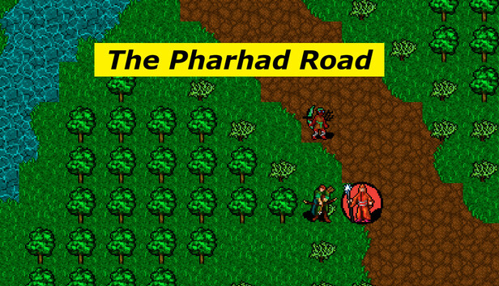
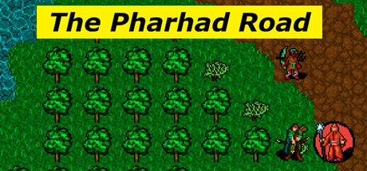

Four pahlavan roles
Pahlavan, Rahnavard, Atash Dastur, and Pari each bring a different answer to the road.
Lead four pahlavans across a dangerous connected battlefield. Scout sight lines, wake divs carefully, spend scarce recovery tools, share supplies, and survive tense dice-driven battles.

The Pharhad Road mixes readable dice with clean digital tactics: line-of-sight activation, movement ranges, action economy, ranged attacks, healing, div conversion, autosave restarts, and recovery decisions between fights.
Pahlavan, Rahnavard, Atash Dastur, and Pari each bring a different answer to the road.
Divs join the fight when sight lines expose the party. One careful move can isolate a threat. One bad move can wake the road.
Critical hits, misses, Kherad trials, downed pahlavans, recovery tools, and scarce supplies create tense survival choices.
Lead Pahlavans, Command Divs, Call Pharhad, Send Dastur Z, or practice in Pahlavan Chess.
Move through a continuous route instead of isolated rooms. The road itself becomes the encounter.
Built for focused tactical sessions: a first run can be longer, while replay runs and Pahlavan Chess are faster.
The Pharhad Road is a compact Persian-inspired tactics game from Teymurian Studios for players who enjoy grid movement, party roles, tactical positioning, and dice-based risk without needing a giant RPG campaign.

Wishlist the Steam page or play the current itch.io build before you step onto the road.

The Pharhad Road is the game I always wanted to play… but nobody ever made.
I didn’t want endless cutscenes. I didn’t want ads. I didn’t want giant bloated systems.
I just wanted to swing a sword and hit something.
Fast.
Simple. Easy to learn. Fun to play. Quick decisions. Cool abilities. Dice rolling. Positioning. BAM.
I wanted to use all those fantasy abilities I grew up reading about without spending hours learning complicated systems before the fun started.
So I made a world where the action starts immediately.
Enemies wake when they see you. Battles explode fast. One mistake can pull the entire battlefield into chaos.
And every pahlavan feels different.
But then something happened while building the game.
I started thinking:
“What about the divs?”
They’re part of the world too.
So I made modes where you can command the divs themselves — turning the road against the pahlavans instead of surviving as them.
Then I thought:
“What if I could play as the force ABOVE the battlefield?”
So I created ways to play almost like a god — interfering with battles, changing outcomes, influencing the chaos itself.
Then I thought:
“What if the pahlavans trained against EACH OTHER?”
So yes… Pahlavan Chess happened.
Pahlavans versus rivals. Practice battles. Pure tactical combat.
But eventually, after building a world completely focused on fighting, I wanted to ask something different:
“What would it mean to heal this world instead?”
A lone figure entering a violent world with:
Only two powers:
And somehow… with only those two skills… They may become the strongest character in the entire world.
That idea matters deeply to me.
Because underneath all the combat, divs, tactics, dice, and chaos, The Pharhad Road is really about choice.
Violence. Survival. Power. Mercy. Control. Healing.
And deciding what kind of force you want to become inside the world.
I built this game by myself in Godot Engine through constant experimentation, failures, bugs, rewrites, and late nights learning step by step.
Some days I felt like a game developer.
Other days I felt like a confused Magi fighting Div.
But I kept going because this world felt real to me.
And because I wanted to finally create the game I had been waiting for my entire life.
Wishlist the game on Steam, play the latest build on itch.io, follow Teymurian Studios on Instagram, or get in touch for feedback, press, creator coverage, or playtesting.